Mathe lernen bedienen
Bedienseite, Stand 15.11.2026. Wie man die Lerneinheiten „Was ist eine Funktion?“ und „Was ist die Ableitung?“ mit je vier Stationen durcharbeitet, übt, Rückmeldungen liest und den Fortschritt verwaltet. Die Bilder sind Bildschirmfotos der App.
Das Fenster
Die App öffnet man im Menü Anwendungen mit  Mathe lernen oder mit
Mathe lernen oder mit Alt+A. Sie hat keine Dialogfenster; alles steht in einem Reiter.
Links steht die senkrechte Leiste: ganz oben die Karte Lerneinheiten, darunter die vier Stationen der gewählten Einheit und die Karte Üben, daneben die Karte der gewählten Station mit Aufgabe, Eingaben und Knöpfen. Die Mitte gehört dem Bild der Aufgabe. Darunter steht links die Rückmeldung zur letzten Antwort – mit einem farbigen Balken: grün richtig, ocker teilweise richtig, rot noch nicht richtig –, rechts der Verlauf aller Versuche und ganz unten der Stand.
Die Leiste
Die Knöpfe tragen nur Symbole; was sie tun, steht im Tooltip. Eine geschaffte Station bekommt im Tooltip ein Häkchen.
| Symbol | Tooltip | Was geschieht |
|---|---|---|
 | Lerneinheiten | Einheit wählen; die Leiste zeigt danach deren Stationen. |
| Die Funktionsmaschine | Regel aus Wertepaaren finden. | |
| Pfeildiagramme | Ist die Zuordnung eine Funktion? | |
| Von der Tabelle zum Graphen | Punkte setzen, Graphen lesen, Senkrechtentest. | |
| Füllgraphen | Gefäße und Graphen zuordnen. | |
 | Mittlere Änderungsrate | Steigung der Sekante am Steigungsdreieck (Einheit Ableitung). |
 | Von der Sekante zur Tangente | Q an P heranziehen, Steigungen in der Tafel vergleichen. |
| Der Grenzwert | m(0) und der Grenzwert von m(h). | |
 | Die h-Methode | Ableitung an einer Stelle und allgemein, Schritt für Schritt. |
 | Üben | Neue Aufgaben zu Nullstellen, Linearfaktoren und Ableitungen in drei Stufen. |
 | Fortschritt löschen | Fragt im Fenster nach; erst ein zweiter Klick löscht. |
| Hilfe zu dieser App | Öffnet die Doku-App auf dieser Seite. |
Die Funktionsmaschine
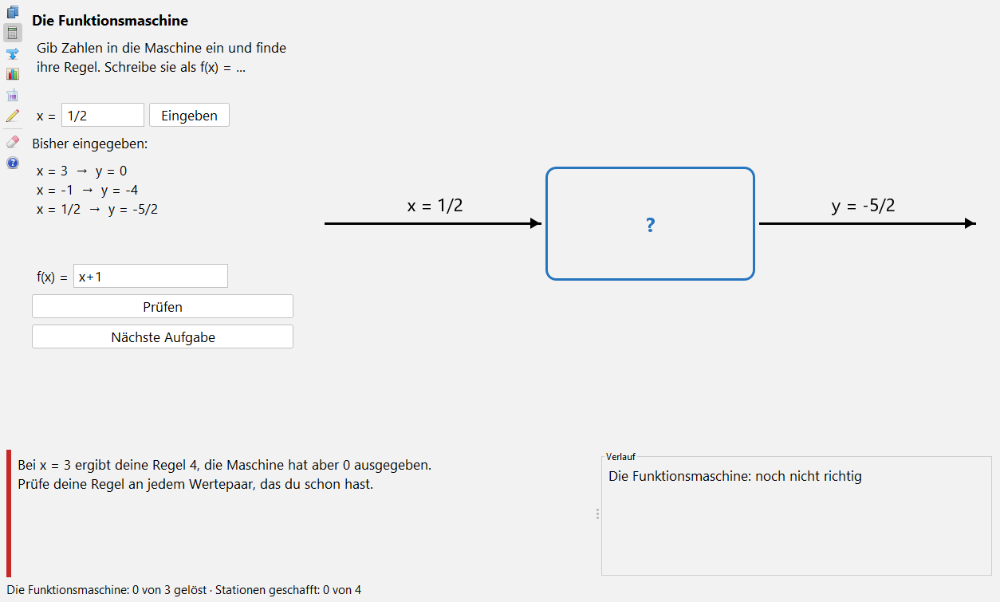
- Hinter x = eine Zahl eintragen – ganz, als Dezimalzahl mit Komma oder Punkt oder als Bruch wie
1/2– und Eingeben drücken (oder Enter). Die Maschine zeigt den Wert, das Paar kommt in die Liste Bisher eingegeben. - Sobald man eine Vermutung hat, die Regel hinter f(x) = eintragen, zum Beispiel
2x-1oderx²+1, und Prüfen drücken. - Stimmt die Regel, ist die Aufgabe gelöst. Passt sie zu den eingegebenen Paaren, aber nicht überall, heißt es „teilweise richtig“: dann mehr Zahlen ausprobieren. Nächste Aufgabe stellt eine neue Maschine.
Ein Term mit x im Eingabefeld der Maschine wird abgewiesen – sie nimmt nur Zahlen. Manche Maschinen geben zum selben x verschiedene Werte aus; dann fragt die Karte statt nach der Regel, ob das noch eine Funktion ist, und man antwortet mit Ja oder Nein. Tipp: dieselbe Zahl zweimal eingeben.
Pfeildiagramme
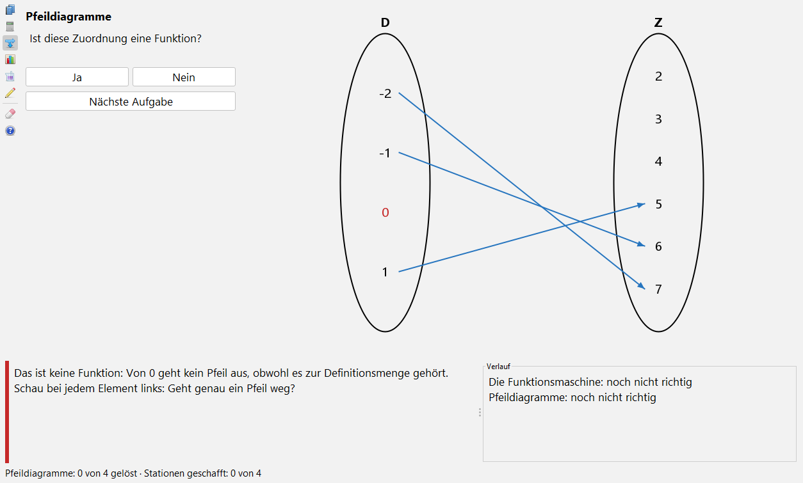
Die Frage lautet immer: Ist diese Zuordnung eine Funktion? Mit Ja oder Nein antworten. Die Rückmeldung erklärt, woran man es sieht: Geht von jedem Element links genau ein Pfeil aus? Zwei Pfeile von einem Element oder ein Element ohne Pfeil machen aus der Zuordnung keine Funktion; zwei Pfeile auf dasselbe Ziel sind dagegen erlaubt.
Von der Tabelle zum Graphen
Die Station hat zwei Teile, oben in der Karte umzuschalten: Wertetabelle und Senkrechte.
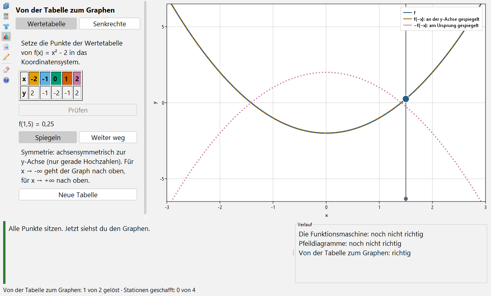
- Über der Tabelle steht die Funktion. Die farbigen Punkte liegen zunächst übereinander am rechten Rand; jeden mit der Maus an seinen Ort ziehen. Sie rasten auf halbe Einheiten ein. Die Farbe in der Tabelle zeigt, welcher Punkt zu welcher Spalte gehört.
- Prüfen drücken. Liegt ein Punkt falsch, sagt die Rückmeldung, ob x und y vertauscht sind oder nur das Vorzeichen von y falsch ist.
- Sitzen alle Punkte, erscheint der Graph mit einem senkrechten Schieber: Ihn ziehen, die Karte zeigt f(x) an der Stelle. Spiegeln blendet f(−x) und −f(−x) ein, Weiter weg zeigt den Graphen von −20 bis 20. Die Karte nennt die Symmetrie und das Verhalten für große x.
- Neue Tabelle stellt die nächste Funktion.
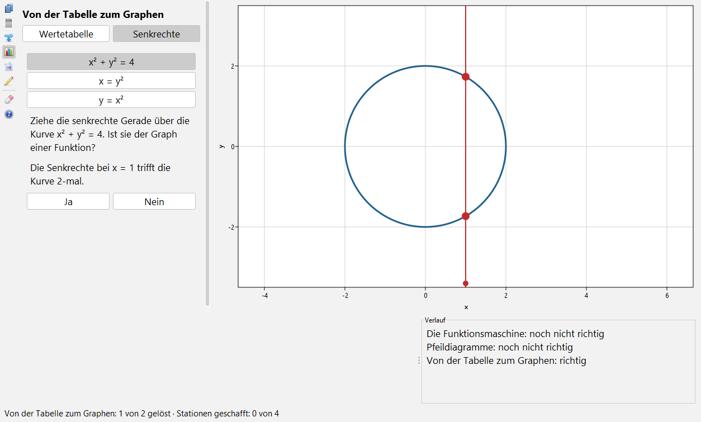
Im Teil Senkrechte wählt man eine der drei Kurven (Kreis, liegende Parabel x = y², stehende Parabel y = x²) und zieht die senkrechte Gerade am Griff unten über die Kurve. Die Schnittpunkte werden rot markiert und gezählt. Dann mit Ja oder Nein beantworten, ob die Kurve der Graph einer Funktion ist.
Füllgraphen
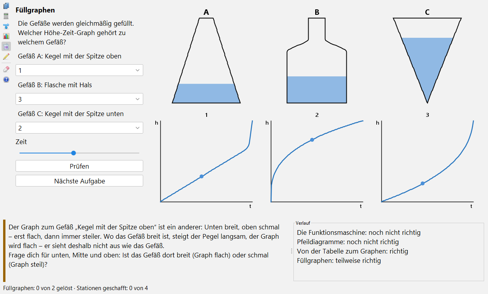
- Den Zeitschieber ziehen und zusehen, wie schnell der Pegel in jedem Gefäß steigt.
- Für jedes Gefäß in der Auswahl den passenden Graphen wählen. Über jeder Auswahl steht, was für ein Gefäß es ist.
- Prüfen drücken. Ist eine Zuordnung falsch, erklärt die Rückmeldung an der Form des Gefäßes, wie sein Graph verlaufen muss: wo das Gefäß breit ist, steigt der Pegel langsam und der Graph ist flach.
Üben
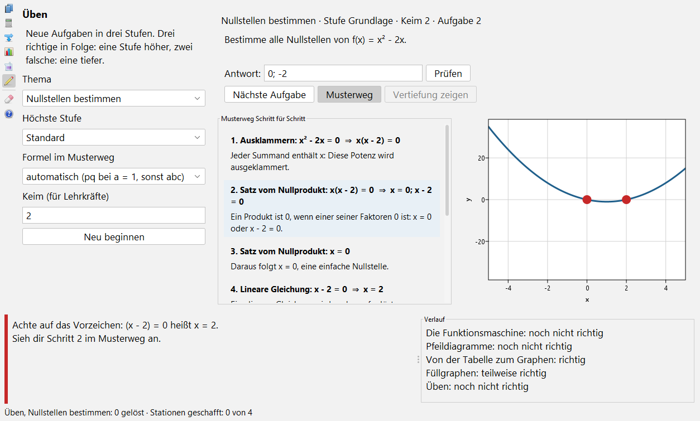
Die Karte mit dem Bleistift stellt Aufgaben aus einem Generator: Nullstellen bestimmen, Linearfaktoren und Ableiten, jeweils in den Stufen Grundlage, Standard und Vertiefung. Jede Aufgabe ist nachgerechnet; die Zahlen bleiben im Bereich, den man von Hand rechnen kann.
- Auf der Karte Thema und höchste Stufe wählen (Vorgabe Standard) und Neu beginnen drücken. Die Folge beginnt in der Grundlage.
- Formel im Musterweg: pq-Formel, abc-Formel oder automatisch (pq, wenn vor x² eine 1 steht, sonst abc) – je nachdem, welche Formel im Unterricht gilt. Die Aufgaben bleiben dieselben, nur der Musterweg rechnet mit der gewählten Formel; die Umstellung wirkt sofort, auch auf die gezeigte Aufgabe.
- Das Feld Keim ist für Lehrkräfte: Mit demselben Keim bekommen alle dieselben Aufgaben in derselben Reihenfolge. Leer gelassen, wählt die App einen zufälligen Keim; er steht in der Kopfzeile über der Aufgabe.
- Die Antwort ins Feld schreiben und Prüfen drücken. Nullstellen werden mit Semikolon getrennt (
-2; 3), auchx = ±√2,(3 ± √17)/4oderL = { }geht; Terme in Schulnotation (3x² - 2,2(x + 1)(x - 3)). Eine Antwort, die sich nicht lesen lässt, zählt nicht als Versuch; die Rückmeldung zeigt die Stelle. - Musterweg blendet den Rechenweg Schritt für Schritt ein. Erkennt die App einen typischen Fehler, nennt die Rückmeldung den Schritt, an dem er entsteht, und der Musterweg hebt ihn hervor. Raten und Polynomdivision sind im Grundkurs nicht gefordert und deshalb eingeklappt; Vertiefung zeigen klappt sie auf.
- Bei Nullstellenaufgaben erscheint nach der Antwort der Graph mit den Nullstellen – vorher würde er die Lösung verraten.
- Nächste Aufgabe geht weiter. Drei richtige Antworten in Folge heben die Stufe um eins, höchstens bis zur gewählten; zwei falsche senken sie. Keine Aufgabe kommt wieder, bevor 40 andere dran waren; auch nach einem Neustart nicht. Die Bauform wechselt von Aufgabe zu Aufgabe, solange es geht – in der Grundlage gibt es von manchen Bauformen nur wenige Aufgaben.
Lerneinheiten wählen
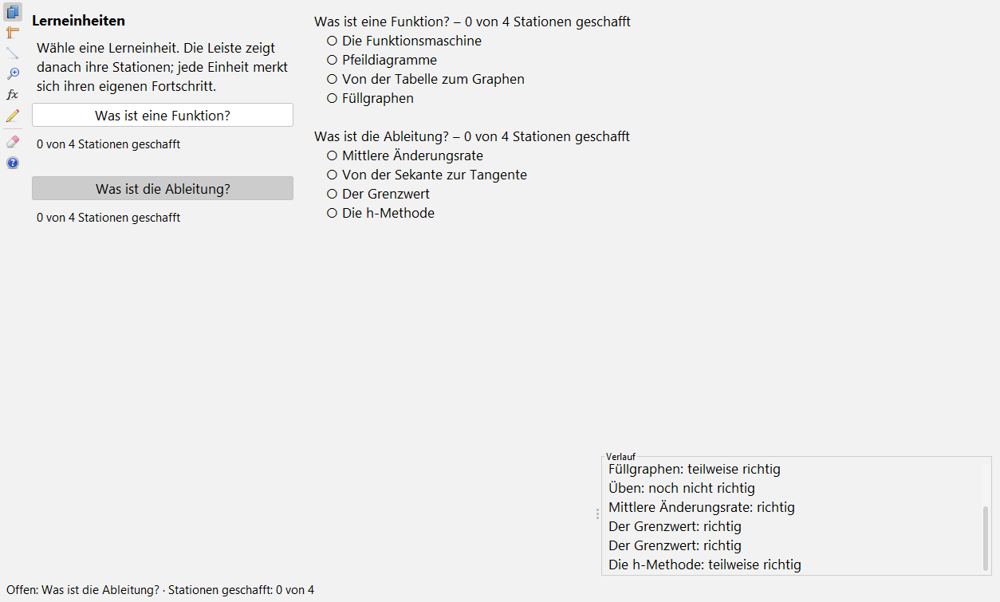
Die App hat zwei Lerneinheiten: Was ist eine Funktion? und Was ist die Ableitung?. Die Karte mit den Büchern ganz oben in der Leiste wählt die Einheit. Danach zeigt die Leiste nur deren Stationen, und die App öffnet die erste Station, die noch nicht geschafft ist. Jede Einheit zählt ihren eigenen Fortschritt; Üben steht für sich und gehört zu keiner Einheit.
Was ist die Ableitung?
Vier Stationen führen von der mittleren Änderungsrate zur h-Methode. Oben auf jeder Karte steht ein Merkkasten mit der kurzen Theorie der Station. Die Farben sind überall dieselben: Δx und h blau, Δy ocker, die Sekante grün, die Tangente zinnoberrot. Die Mathematik dahinter erklärt die Seite Vom Differenzenquotienten zur Ableitung.
Mittlere Änderungsrate
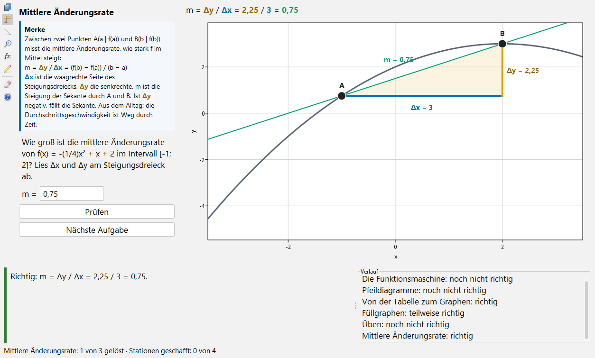
Die Aufgaben wechseln sich ab. Bei einer Rechenaufgabe stehen A und B fest; man liest Δx und Δy am Dreieck ab, schreibt m ins Feld (-0,5, 3/2) und drückt Prüfen. Bis zur ersten gezählten Antwort steht in der Formel m = ?. Bei einer Aufgabe zum Ziehen zieht man A und B auf dem Graphen, bis m das Ziel trifft – einen bestimmten Wert, 0 oder einen negativen Wert –, und drückt Prüfen. Die Punkte rasten auf ganzen Zahlen ein; Δx, Δy und m stehen beim Ziehen sofort am Bild. Die Rückmeldung erkennt einen umgedrehten Bruch, ein falsches Vorzeichen und das Vergessen der Division.
Von der Sekante zur Tangente
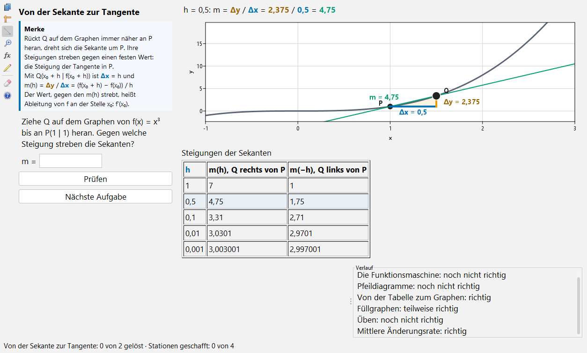
P steht fest, Q zieht man auf dem Graphen in Zehntelschritten. Die Formel über dem Bild nennt h und die Steigung der Sekante, die Tafel unter dem Bild die Steigungen für h = 1; 0,5; 0,1; 0,01; 0,001, von rechts und von links. Liegt Q auf P, erscheint die Tangente mit einem Steigungsdreieck der Breite 1. Gefragt ist die Zahl, der sich die Steigungen nähern; ein Funktionswert oder eine Steigung aus der Tafel werden als solche erkannt.
Der Grenzwert
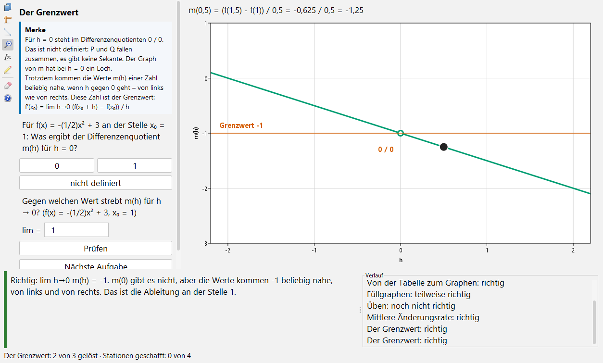
Zuerst fragt die Karte, was m(h) bei h = 0 ergibt: 0, 1 oder nicht definiert. Danach zieht man den Punkt auf dem Graphen von beiden Seiten an das Loch heran; die Formel über dem Bild rechnet für das gezogene h vor. Den Wert, dem m(h) beliebig nahe kommt, schreibt man ins Feld lim = und drückt Prüfen.
Die h-Methode
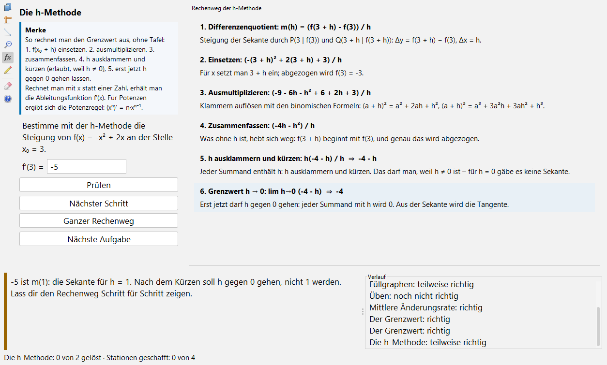
Die Aufgaben wechseln zwischen einer Stelle (f′(x₀) =, Antwort eine Zahl) und der Ableitungsfunktion (f′(x) =, Antwort ein Term wie 3x² - 2). Nächster Schritt deckt den Rechenweg Schritt für Schritt auf, Ganzer Rechenweg alles auf einmal. Erkennt die App den Schritt, an dem eine falsche Antwort entsteht, deckt sie den Weg bis dorthin auf und hinterlegt ihn. Nach der richtigen Antwort steht der ganze Weg da, darunter der Graph von f mit der Tangente oder mit f′ gestrichelt.
Fortschritt und Arbeitsstand
Jede Station verlangt eine Zahl gelöster Aufgaben: drei Maschinen, vier Pfeildiagramme, zwei Aufgaben zum Graphen, zwei Füllaufgaben; in der Einheit Ableitung drei Änderungsraten, zwei Tangenten, drei Grenzwerte und zwei Aufgaben zur h-Methode. Ist sie erreicht, meldet die Statuszeile die geschaffte Station und nennt die nächste. Der Stand ganz unten zeigt beides laufend an, jeweils für die Einheit der offenen Station.
Den Fortschritt je Einheit, die offene Einheit und Station, Aufgabennummern und die Übungsfolge (Thema, Stufen, Keim, Aufgabe, Formel) merkt sich der Arbeitsstand; beim nächsten Start geht es an derselben Stelle mit derselben Aufgabe weiter. Der Radiergummi löscht den Fortschritt aller Einheiten – nach einer Rückfrage im Fenster, die ein zweiter Klick bestätigt.